45-fixture dim-and-color lighting
Residential dim-and-color install. Blue LED uplights on the trees and walls, and path lights along the drive.
Photos from jobs in this set.
No photos in this category yet.
Residential dim-and-color install. Blue LED uplights on the trees and walls, and path lights along the drive.
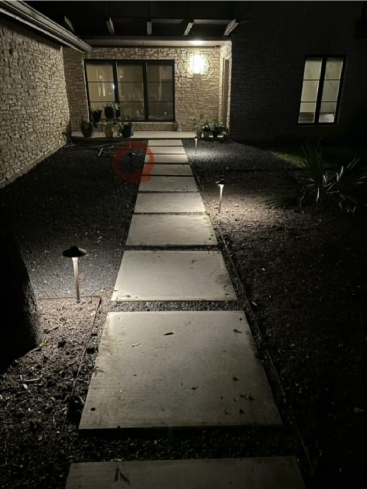
Low path lights beside concrete stepping pads, and a wall lantern under a covered entry. The source file is a phone screenshot and still has a red markup circle on one fixture.
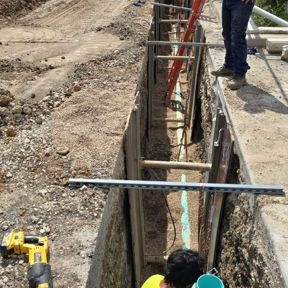
About 1,500 linear feet excavated for new chiller and return lines. Shoring, gravel bedding, and a marked line in the trench.
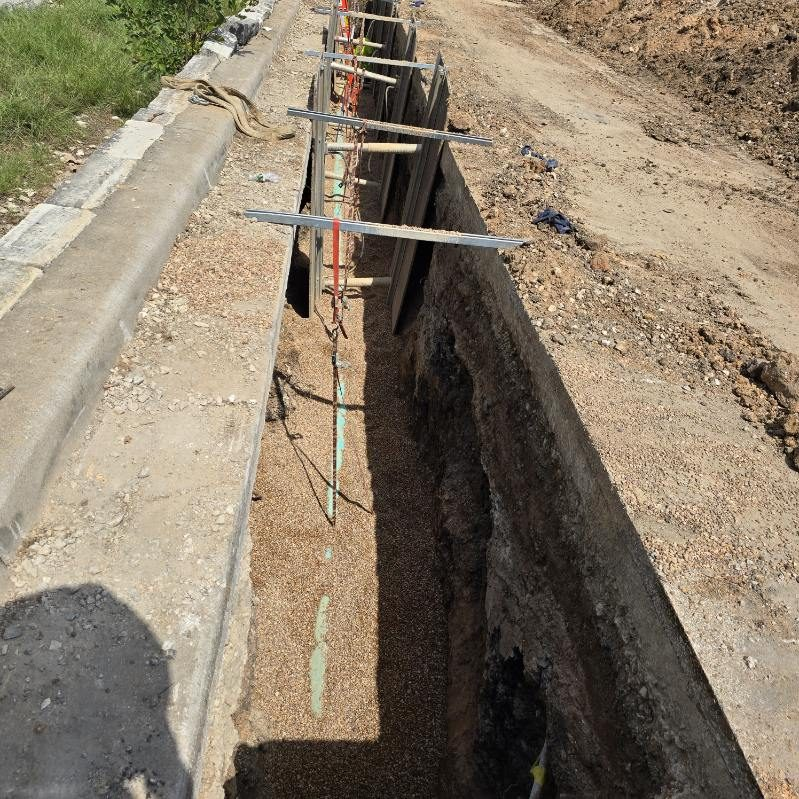
Metal shoring, gravel bedding, and a marked line beside a concrete curb.
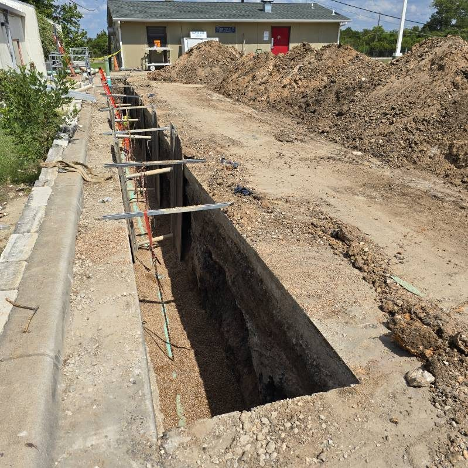
The cut continues past the shoring, with spoil piled along the side and a building in the background.
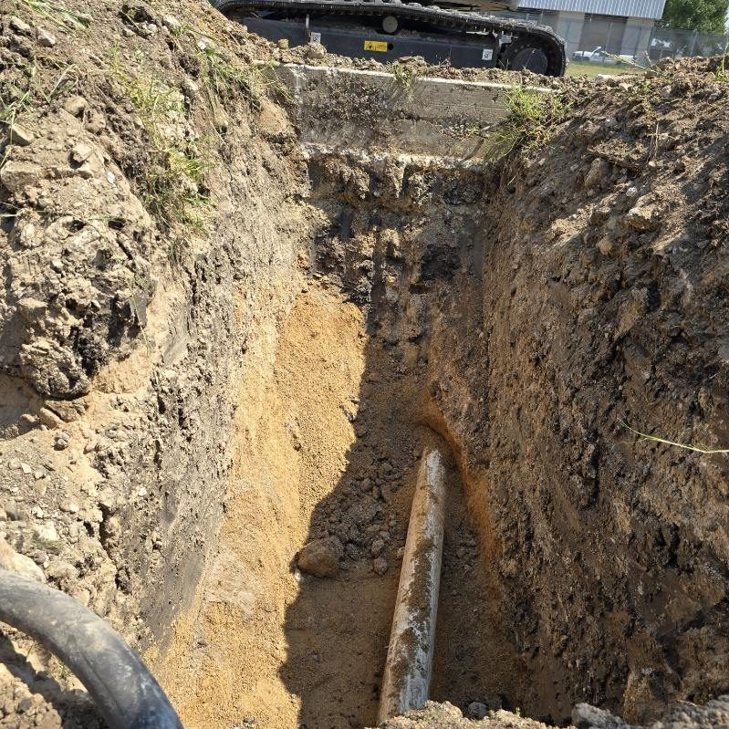
A white pipe bedded in sand, with a tracked excavator at the top of the cut.
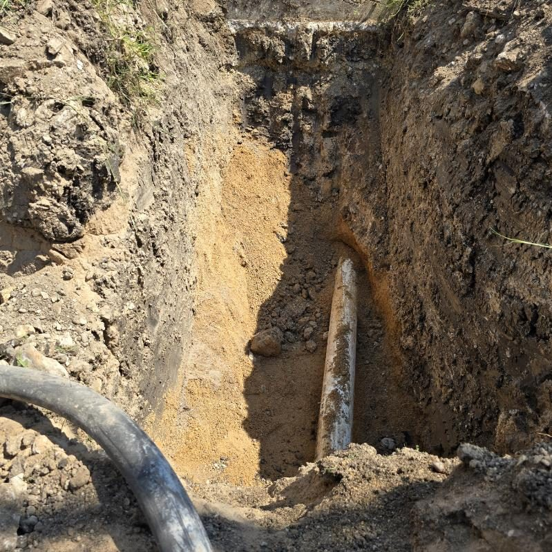
A tighter view of bedded pipe, with a black line entering the trench in the foreground.
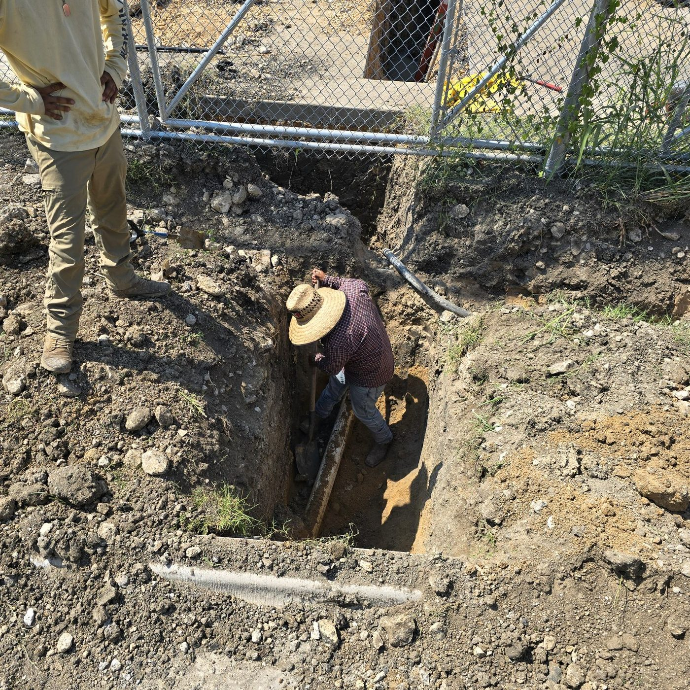
A worker in a narrow trench beside a chain-link fence, with conduit at the edge of the cut.
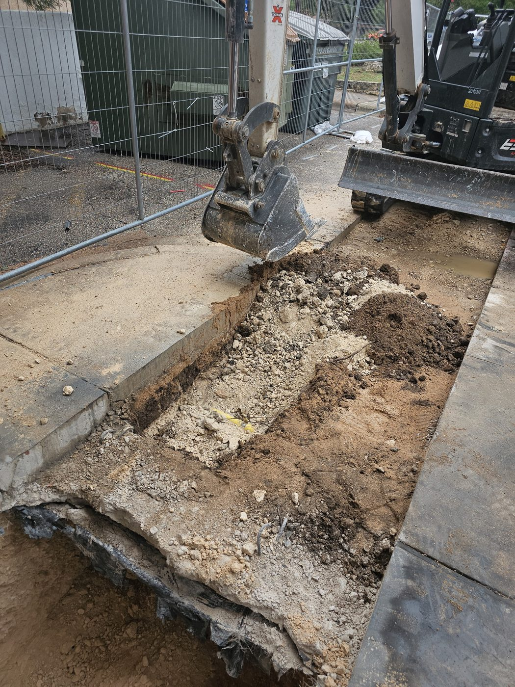
An excavator opening a trench through an existing slab.
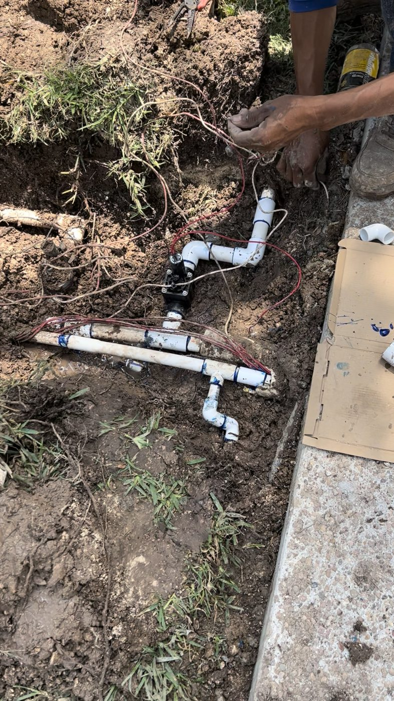
PVC manifold and valve solenoids in an open trench, with the low-voltage wires being landed. Cropped from a phone screenshot.
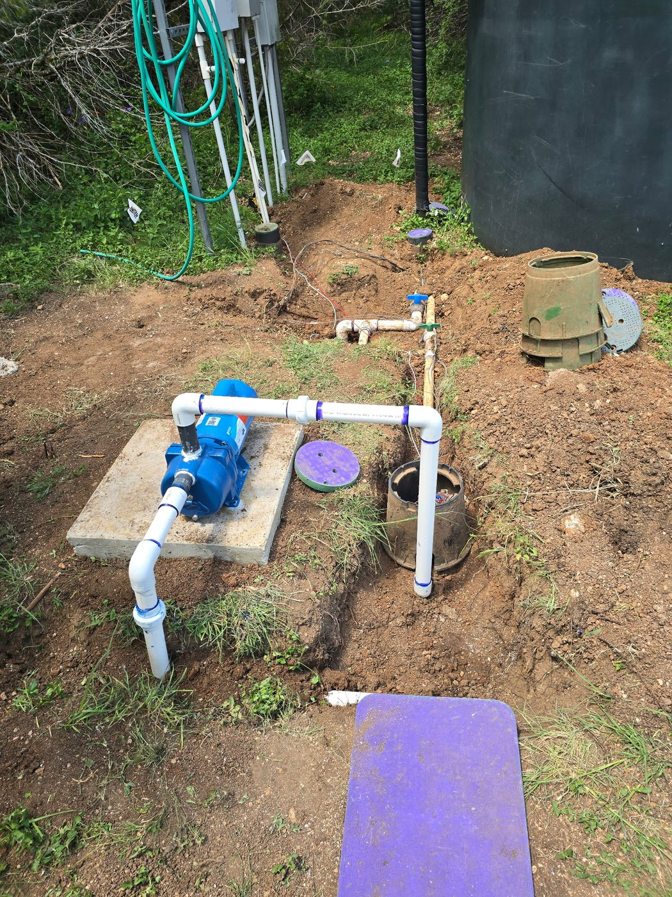
A pump on a concrete pad, piped to a valve box beside a storage tank.
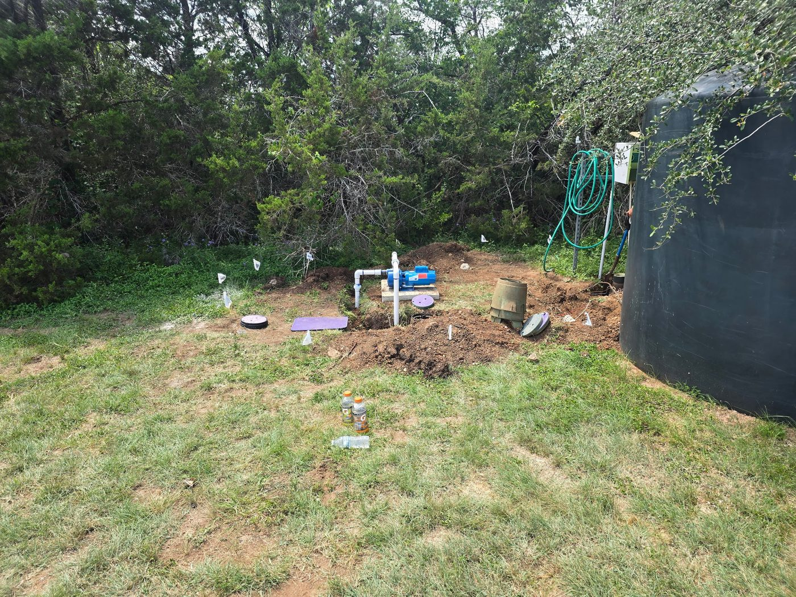
Wider view of the same pump, valve boxes, and storage tank.

Horizontal cedar boards on black posts, with a mulched bed in front. Orange marks are drawn on the bed in the photo.
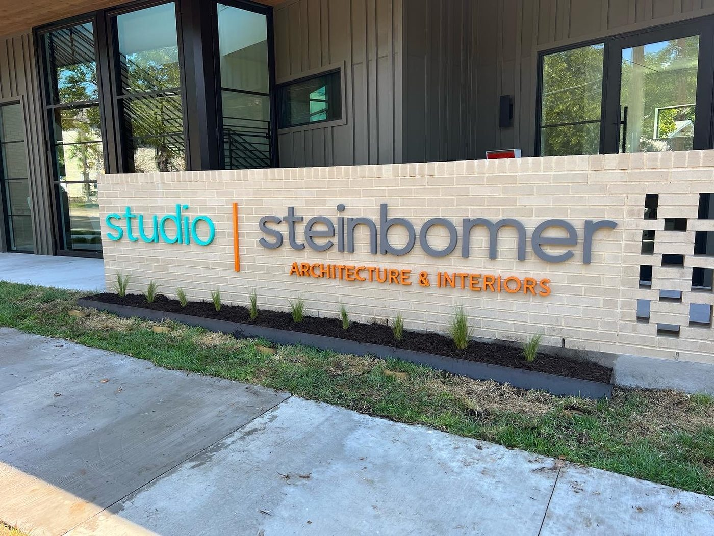
Brick monument wall, a steel planter, and a concrete walk. The sign on the wall belongs to the building.
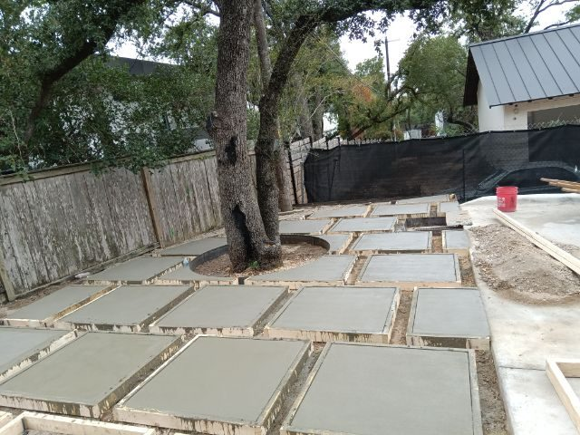
Square concrete pads still in their forms, set around a tree. These are poured pads, not pavers.
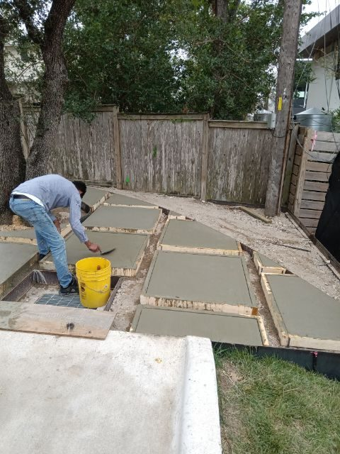
The same pour, with the surface being finished by hand.
Named work with no photo in this set: Martin Middle School fields irrigation, and two softball-field irrigation systems at Dripping Springs Sports Complex. No drainage photo is in the set.
Request a Free Estimate